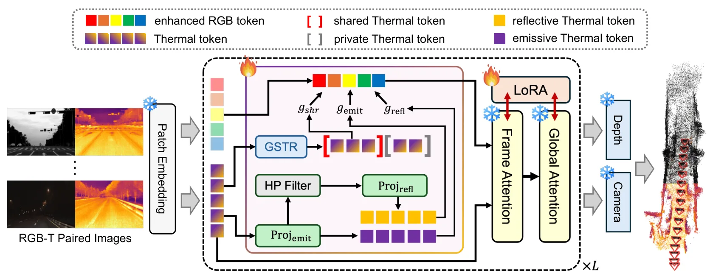
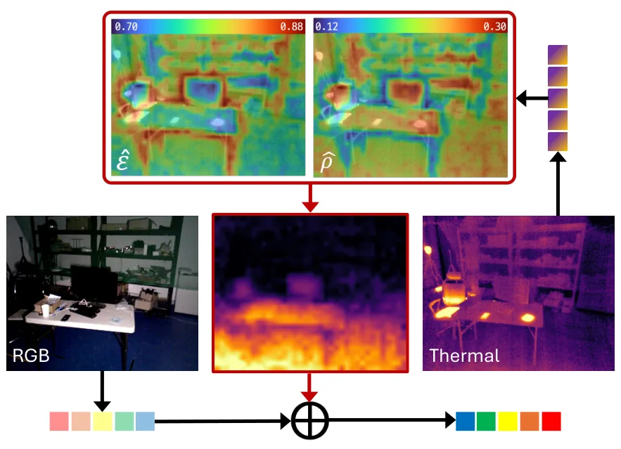
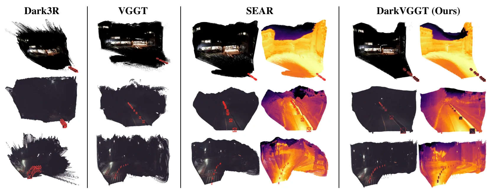
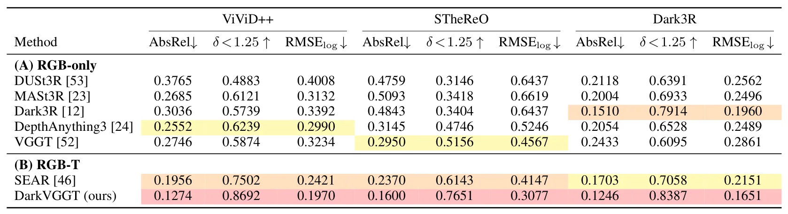
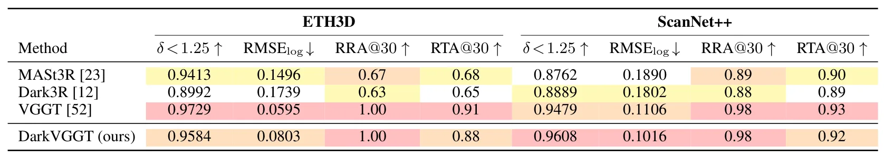
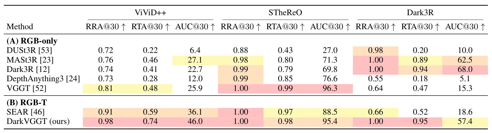

DarkVGGT：利用热红外几何在黑暗中三维感知且不牺牲白天性能DarkVGGT: Seeing Through Darkness Using Thermal Geometry without Daylight Tax
今天最接近视觉/热红外里程计与弱光 SLAM 鲁棒性的论文；采集分低但方向价值高，需关注数据、实时性和 VIO/LIO 接口。
一句话工作总结
DarkVGGT 把物理感知热红外线索注入 VGGT 类前馈几何模型，在黑暗环境中改善深度和相机位姿估计。
摘要
近期前馈式三维重建方法能从图像流高效端到端估计场景几何，但它们依赖可见光外观，因此在黑暗和低能见度环境中容易失效：RGB 线索严重退化，几何证据变得模糊。DarkVGGT 是一个 RGB-T 前馈几何框架，用物理感知热建模增强低光场景中的鲁棒三维估计。它包含两个互补模块：第一，physics-inspired thermal factorization 提取发射主导、几何一致的热红外线索，同时隔离可能造成几何歧义的稀疏反射残差；第二，geometry-shared thermal routing 从热红外特有模式中分离跨模态几何结构，并选择性地把可靠结构引导注入 RGB 流。实验在低能见度 RGB-T benchmark 上显示，DarkVGGT 相比现有前馈几何 baseline 在深度和相机位姿估计上持续提升，同时基本保留明亮环境下的性能。
Recent feed-forward 3D reconstruction methods have demonstrated strong performance and flexibility in efficient end-to-end scene geometry estimation from image streams. However, their reliance on visible-light appearance makes them vulnerable in dark and low-visibility environments, where RGB cues are severely degraded and geometric evidence becomes ambiguous. To address this challenge, we propose DarkVGGT, an RGB-T feed-forward geometry framework that uses physics-aware thermal modeling for robust 3D estimation in low-light scenes. DarkVGGT introduces two complementary modules. First, physics-inspired thermal factorization extracts emissive-dominant, geometry-consistent thermal cues while isolating sparse reflective residuals that may introduce geometric ambiguity. Second, geometry-shared thermal routing isolates modality-invariant geometric structures from thermal-specific patterns, selectively injecting reliability-aware structural guidance into the RGB stream. Together, these components enable accurate thermal-informed geometry estimation under degraded RGB conditions while largely preserving performance in well-lit environments. Experiments on low-visibility RGB-T benchmarks demonstrate consistent improvements in both depth and camera pose estimation over existing feed-forward geometry baselines.
中文解读摘录
- 作者：Matthew Cong, Francis Williams, Jonathan Swartz, Mark Harris, Sanja Fidler, Ken Museth；类别：cs.CV / cs.DC / cs.GR / cs.LG；发布日期：2026-06-10；备注：14 pages, 6 tables, 2 figures；采集 score=13
- 核心问题：3DGS 在真实大场景重建中受单 GPU 显存与算力限制，难以扩大到城市级、街景级细节，同时多卡分布式实现通常要求模型代码显式处理跨设备通信。
- 方法亮点：提出一个 PyTorch backend，把 Gaussian 参数和 splatting operators 通过 CUDA unified memory 与 NVLink 分布到多 GPU；分布发生在 operator 层，模型代码可把多张 GPU 视作聚合 PyTorch device，不需要手写跨设备通信。
- 结果信号：展示了包含 超过 10 亿 Gaussian splats 的城市级重建，数量超过当前 SOTA 25 倍以上，并保持街景级细节。
- 关注价值：这更像 3DGS 系统/基础设施论文，不是 SLAM 算法；但对大尺度机器人地图、城市数字孪生和长序列 Nerfstudio/3DGS 重建非常关键。后续应关注显存分页、NVLink 依赖、训练/渲染吞吐，以及是否能接入已有 COLMAP/SLAM 位姿和地图分块流程。
图表/页面预览

{kind=link}

{kind=link}

{kind=link}

{kind=link}

{kind=link}

{kind=link}
